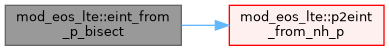
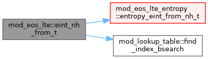
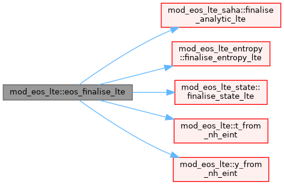
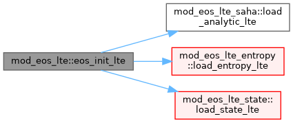
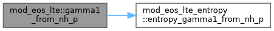
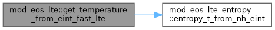
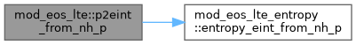
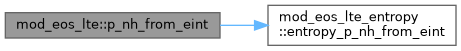
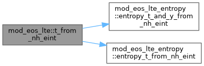
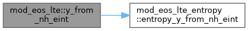

|
MPI-AMRVAC 3.2
The MPI - Adaptive Mesh Refinement - Versatile Advection Code (development version)
|
LTE (Saha-table) EoS kernels and finalise for the eos% family. More...
Functions/Subroutines | |
| subroutine, public | eos_init_lte () |
| update_eos_LTE, get_Te_LTE, get_temperature_from_eint_LTE and Rfactor_from_LTE are PRIVATE: all bound to eos% pointers inside eos_finalise_LTE, so no external module names them. get_temperature_from_eint_fast_LTE stays public – the seam binds it to tc_flget_temperature_from_eint (fast TC path). | |
| subroutine, public | eos_finalise_lte () |
| LTE arm of eos_finalise: wire the LTE runtime pointer targets, then dispatch on eos_method to the per-method finaliser, each owned by its method module (analytic->mod_eos_LTE_saha, entropy->mod_eos_LTE_entropy, tables->mod_eos_LTE_tables). | |
| subroutine, public | get_temperature_from_eint_fast_lte (w, x, ixil, ixol, res) |
| double precision function, public | y_from_nh_eint (nh, eint_nh) |
| Ionization fraction from (log10 nH, log10 eint/nH) in code units. Dispatches: analytic -> Saha quadratic, tables -> PCHIP interpolation. | |
| double precision function, public | t_from_nh_eint (nh, eint_nh) |
| Temperature from (log10 nH, log10 eint/nH) in code units. Dispatches: analytic -> Saha bisection/Newton, tables -> PCHIP interpolation. | |
| double precision function, public | p2eint_from_nh_p (nh, ponh) |
| Pressure-to-eint ratio from (log10 nH, log10 p/nH) in code units. Dispatches: analytic -> Saha solve for eint/p, tables -> PCHIP interpolation. | |
| double precision function, public | gamma1_from_nh_p (log_nh, log_p_nh) |
| Gamma_1 from pressure-indexed table: (log10 nH, log10 p/nH) -> Gamma_1. For 'entropy' the conversion p -> eint -> Gamma_1 via formula is intended to keep Maxwell consistency with the forward at runtime. The p->eint inverse is one bisection per cell – non-trivial cost; this function is in the hot path via hd_get_csound2_LTE. | |
| double precision function, public | p_nh_from_eint (log_nh, log_eint_nh) |
| p/nH from (log10 nH, log10 eint/nH) in code units. Returns (1+He+y)*T directly – single lookup replaces T + y lookups. | |
| double precision function, public | eint_nh_from_t (log_nh, log_t) |
| Internal energy per nH from (log10 nH, log10 T) in code units. Uses the bisection-built inverse table (H+He, machine precision). Fallback: H-only Saha if table not built. | |
| subroutine, public | eint_from_p_bisect (log_nh_val, log_p_val, log_eint_nh_out) |
| Given log10(nH) and log10(p), find log10(eint/nH) by table-guessed bisection on the forward pressure table. Wraps the bracketing logic and log_p_bisect_cached into a single call for use by both HD and MHD from_conserved routines. | |
| subroutine, public | eos_get_eintt_grid (n_nh, lg_nh_min, lg_nh_max) |
| log_nH grid metadata of the (log_nH, log_T) inverse table (eint from T), choosing the container by method ('tables'->eint_from_T, 'entropy'->eintT). n_nH=0 if no such table (analytic/FI). Lets cooling's build_Y_mod_table get its grid without reaching into EoS table internals. | |
LTE (Saha-table) EoS kernels and finalise for the eos% family.
Carved out of mod_eos.t (the per-type split). Owns everything LTE: the per-substep update_eos_LTE (caches Te_/Ne_), the cached-Te/Rfactor getters, the scalar table kernels (T, y, p2eint, gamma1, p/nH, eint, bisections), the per-method table finalisers, and eos_finalise_LTE (the LTE arm of the eos_finalise dispatcher). Depends only on the EoS leaf modules + shared accessors, never on mod_eos -> no circular use. mod_eos re-exports the public kernels so existing use mod_eos callers are unaffected.
| subroutine, public mod_eos_lte::eint_from_p_bisect | ( | double precision, intent(in) | log_nh_val, |
| double precision, intent(in) | log_p_val, | ||
| double precision, intent(out) | log_eint_nh_out | ||
| ) |
Given log10(nH) and log10(p), find log10(eint/nH) by table-guessed bisection on the forward pressure table. Wraps the bracketing logic and log_p_bisect_cached into a single call for use by both HD and MHD from_conserved routines.
Definition at line 758 of file mod_eos_LTE.t.

| double precision function, public mod_eos_lte::eint_nh_from_t | ( | double precision, intent(in) | log_nh, |
| double precision, intent(in) | log_t | ||
| ) |
Internal energy per nH from (log10 nH, log10 T) in code units. Uses the bisection-built inverse table (H+He, machine precision). Fallback: H-only Saha if table not built.
Definition at line 536 of file mod_eos_LTE.t.

| subroutine, public mod_eos_lte::eos_finalise_lte |
LTE arm of eos_finalise: wire the LTE runtime pointer targets, then dispatch on eos_method to the per-method finaliser, each owned by its method module (analytic->mod_eos_LTE_saha, entropy->mod_eos_LTE_entropy, tables->mod_eos_LTE_tables).
R-factor: physics-independent (cached-Ne lookup), bound here rather than in the hd/mhd/ffhd link arms so the target stays private.
Definition at line 59 of file mod_eos_LTE.t.

| subroutine, public mod_eos_lte::eos_get_eintt_grid | ( | integer, intent(out) | n_nh, |
| double precision, intent(out) | lg_nh_min, | ||
| double precision, intent(out) | lg_nh_max | ||
| ) |
log_nH grid metadata of the (log_nH, log_T) inverse table (eint from T), choosing the container by method ('tables'->eint_from_T, 'entropy'->eintT). n_nH=0 if no such table (analytic/FI). Lets cooling's build_Y_mod_table get its grid without reaching into EoS table internals.
Table-metadata helpers: expose inverse-table grid bounds without reaching into EoS table internals.
Definition at line 813 of file mod_eos_LTE.t.
| subroutine, public mod_eos_lte::eos_init_lte |
update_eos_LTE, get_Te_LTE, get_temperature_from_eint_LTE and Rfactor_from_LTE are PRIVATE: all bound to eos% pointers inside eos_finalise_LTE, so no external module names them. get_temperature_from_eint_fast_LTE stays public – the seam binds it to tc_flget_temperature_from_eint (fast TC path).
Scalar table kernels (re-exported by mod_eos for the hd/mhd/ffhd seams). T_and_y_from_nH_eint is internal-only (entropy update path). LTE arms of the eos_init / eos_finalise dispatchers LTE arm of eos_init (before units are known): dispatch on eos_method to the chosen method's loader, each owned by its method module (analytic loads nothing). The LTE temperature-from-pressure getter is a later pass, so unlike FI/PI it is left unset here.
Definition at line 47 of file mod_eos_LTE.t.

| double precision function, public mod_eos_lte::gamma1_from_nh_p | ( | double precision, intent(in) | log_nh, |
| double precision, intent(in) | log_p_nh | ||
| ) |
Gamma_1 from pressure-indexed table: (log10 nH, log10 p/nH) -> Gamma_1. For 'entropy' the conversion p -> eint -> Gamma_1 via formula is intended to keep Maxwell consistency with the forward at runtime. The p->eint inverse is one bisection per cell – non-trivial cost; this function is in the hot path via hd_get_csound2_LTE.
Definition at line 492 of file mod_eos_LTE.t.

| subroutine, public mod_eos_lte::get_temperature_from_eint_fast_lte | ( | double precision, dimension(ixi^s,1:nw), intent(in) | w, |
| double precision, dimension(ixi^s,1:ndim), intent(in) | x, | ||
| integer, intent(in) | ixi, | ||
| integer, intent(in) | l, | ||
| integer, intent(in) | ixo, | ||
| l, | |||
| double precision, dimension(ixi^s), intent(out) | res | ||
| ) |
| [in] | ixi | Fast TC variant: two-pass regime-aware bypass. |
Pass 1 (vectorised): compute FI formula for ALL cells as array ops. The compiler vectorises this with SVML (no branches, pure arithmetic).
Pass 2 (scalar): overwrite ionisation-zone cells with bilinear table lookup + dexp. Threshold check uses multiply (eint <= threshold * rho) to avoid a 14-cycle scalar division.
| [in] | l | Fast TC variant: two-pass regime-aware bypass. |
Pass 1 (vectorised): compute FI formula for ALL cells as array ops. The compiler vectorises this with SVML (no branches, pure arithmetic).
Pass 2 (scalar): overwrite ionisation-zone cells with bilinear table lookup + dexp. Threshold check uses multiply (eint <= threshold * rho) to avoid a 14-cycle scalar division.
| [in] | ixo | Fast TC variant: two-pass regime-aware bypass. |
Pass 1 (vectorised): compute FI formula for ALL cells as array ops. The compiler vectorises this with SVML (no branches, pure arithmetic).
Pass 2 (scalar): overwrite ionisation-zone cells with bilinear table lookup + dexp. Threshold check uses multiply (eint <= threshold * rho) to avoid a 14-cycle scalar division.
| [in] | l | Fast TC variant: two-pass regime-aware bypass. |
Pass 1 (vectorised): compute FI formula for ALL cells as array ops. The compiler vectorises this with SVML (no branches, pure arithmetic).
Pass 2 (scalar): overwrite ionisation-zone cells with bilinear table lookup + dexp. Threshold check uses multiply (eint <= threshold * rho) to avoid a 14-cycle scalar division.
Precompute scalar constants (avoid per-cell divisions)
Pass 1: FI formula for ALL cells (vectorisable array operations). T = (gamma-1) * (eint - eion_per_rho * rho) / (Rfactor_FI * rho)
Pass 2: overwrite ionisation-zone cells.
Inlined uniform bilinear (hot path: no function call).
Non-uniform: dispatch to the binary-search bilinear. Slightly slower per cell (binary search adds ~8 cmps per axis) but unavoidable when the grid is non-uniform.
Definition at line 265 of file mod_eos_LTE.t.

| double precision function, public mod_eos_lte::p2eint_from_nh_p | ( | double precision, intent(in) | nh, |
| double precision, intent(in) | ponh | ||
| ) |
Pressure-to-eint ratio from (log10 nH, log10 p/nH) in code units. Dispatches: analytic -> Saha solve for eint/p, tables -> PCHIP interpolation.
Definition at line 460 of file mod_eos_LTE.t.

| double precision function, public mod_eos_lte::p_nh_from_eint | ( | double precision, intent(in) | log_nh, |
| double precision, intent(in) | log_eint_nh | ||
| ) |
p/nH from (log10 nH, log10 eint/nH) in code units. Returns (1+He+y)*T directly – single lookup replaces T + y lookups.
Definition at line 515 of file mod_eos_LTE.t.

| double precision function, public mod_eos_lte::t_from_nh_eint | ( | double precision, intent(in) | nh, |
| double precision, intent(in) | eint_nh | ||
| ) |
Temperature from (log10 nH, log10 eint/nH) in code units. Dispatches: analytic -> Saha bisection/Newton, tables -> PCHIP interpolation.
Definition at line 390 of file mod_eos_LTE.t.

| double precision function, public mod_eos_lte::y_from_nh_eint | ( | double precision, intent(in) | nh, |
| double precision, intent(in) | eint_nh | ||
| ) |
Ionization fraction from (log10 nH, log10 eint/nH) in code units. Dispatches: analytic -> Saha quadratic, tables -> PCHIP interpolation.
Scalar EoS kernels: pointwise lookups on (log10 nH, log10 eint/nH) or (log10 nH, log10 p/nH) in code units, called by the hd/mhd EoS layer. Each dispatches analytic / entropy / table. Ionisation fraction and temperature first, then pressure / Gamma_1 / eint.
Definition at line 363 of file mod_eos_LTE.t.
